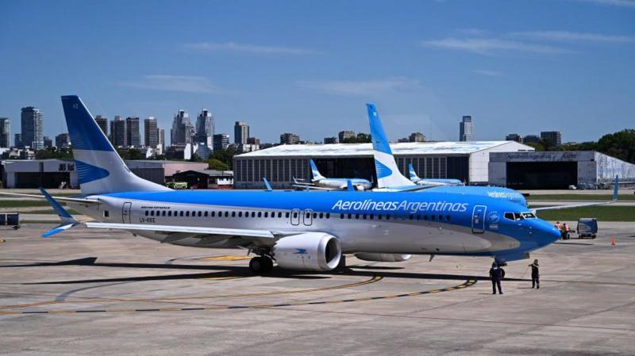

El gobierno del presidente Nicolás Maduro anunció el cierre del espacio aéreo venezolano para los aviones argentinos, en respuesta a la incautación de una aeronave venezolana-iraní que permaneció retenida en Argentina por una investigación sobre terrorismo. “Venezuela ejerce plena soberanía en su espacio aéreo, y reitera que ninguna aeronave, que provenga o se dirija a la Argentina, podrá sobrevolar nuestro territorio”, dijo el canciller venezolano, Yván Gil, en su cuenta de X, antes Twitter. Un Boeing 747 de la aerolínea venezolana Emtrasur fue retenido por las autoridades argentinas el 8 de junio de 2022, tras quedar varado por falta de combustible. El avión, que trasladaba tripulantes venezolanos e iraníes, quedó detenido en el aeropuerto internacional de Ezeiza, en Buenos Aires.
El mensaje publicado por el canciller Yván Gil, Ministro del Poder Popular para Relaciones Exteriores, no deja dudas: “Venezuela ejerce plena soberanía en su espacio aéreo, y reitera que ninguna aeronave, que provenga o se dirija a la Argentina, podrá sobrevolar nuestro territorio”. ¿El motivo? Sería en represalía por la entrega del Boeing de Emtrasur Cargo -quedó detenido en junio de 2022- a los Estados Unidos, donde se lo reclamaba por estar sujeto al esquema de sanciones y embargos contra Venezuela e Irán. Ante esta situación, en River evalúan opciones. Si en las próximas horas no se resuelve el conflicto teniendo en cuenta que todavía queda margen porque el partido será en la primera semana de abril, una posibilidad es viajar en un avión que no esté no matriculado en Argentina. O bien, que se produzca una gestión diplomática de Conmebol para tener una excepción y que Venezuela permita que todos los charters de la Confederación puedan aterrizar en sus aeropuertos.
